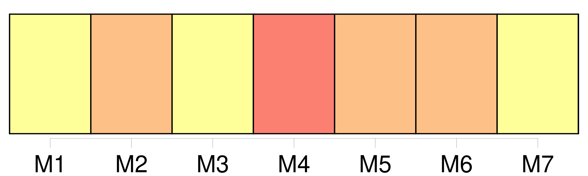
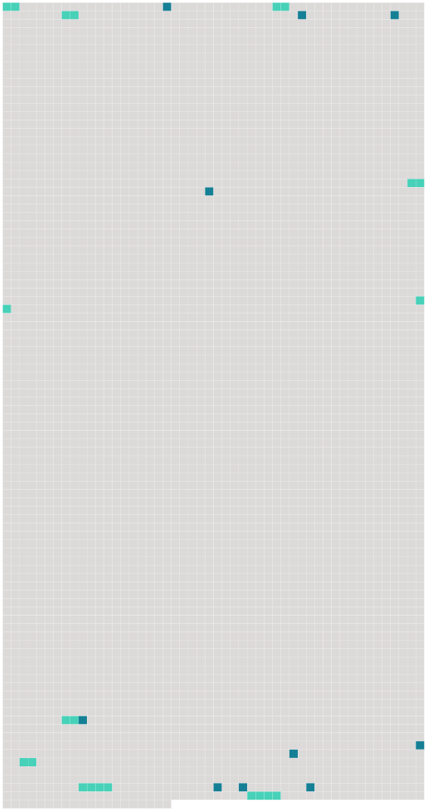

Longueur nb maillons : 19 mentions |
  |
[Les époux] pourront réciproquement demander le divorce pour excès, sévices ou injures graves, de l'un d' [eux] envers l'autre. [1 phrases]
La condamnation de l'un [des époux] à une peine infamante, sera pour l'autre époux une cause de divorce. [1 phrases]
Le consentement mutuel et persévérant [des époux] , exprimé de la manière prescrite par la loi, sous les conditions et après les épreuves qu'elle détermine prouvera suffisamment que la vie commune [leur] est insupportable et qu'il existe, par rapport à [eux] une cause péremptoire de divorce. [40 phrases]
À chaque acte de la cause, [les parties] pourront, après le rapport du juge, et avant que le commissaire du Gouvernement ait pris la parole, proposer ou faire proposer [leurs] moyens respectifs, d'abord sur les fins de non-recevoir, et ensuite sur le fond mais en aucun cas le conseil du demandeur ne sera admis, si le demandeur n'est pas comparant en personne. [28 phrases]
Après une année d'épreuve, si [les parties] ne se sont pas réunies, l'époux demandeur pourra faire citer l'autre époux à comparaître au tribunal, dans les délais de la loi, pour y entendre prononcer le jugement définitif, qui pour lors admettra le divorce. [92 phrases]
[Les époux] [qui] divorceront pour quelque cause que ce soit, ne pourront plus se réunir. [8 phrases]
Pour quelque cause que le divorce ait lieu, hors le cas du consentement mutuel, l'époux contre lequel le divorce aura été admis, perdra tous les avantages que l'autre époux lui avait faits, soit par [leur] contrat de mariage, soit depuis le mariage contracté. [1 phrases]
L'époux qui aura obtenu le divorce, conservera les avantages à lui faits par l'autre époux, encore qu' [ils] aient été stipulés réciproques et que la réciprocité n'ait pas lieu. [1 phrases] Si [les époux] ne s'étaient fait aucun avantage, ou si ceux stipulés ne paraissaient pas suffisans pour assurer la subsistance de l'époux qui a obtenu le divorce, le tribunal pourra lui accorder, sur les biens de l'autre époux, une pension alimentaire, qui ne pourra excéder le tiers des revenus de cet autre époux. [4 phrases]
Quelle que soit la personne à laquelle les enfans seront confiés [les père et mère] conserveront respectivement le droit de surveiller l'entretien et l'éducation de [leurs] enfans et [seront] tenus d'y contribuer à proportion de [leurs] faculté. [1 phrases]
La dissolution du mariage par le divorce admis en justice ne privera les enfans nés de ce mariage, d'aucuns des avantages qui leur étaient assurés par les lois, ou par les conventions matrimoniales de [leurs père et mère] ; mais il n'y aura d'ouverture aux droits des encans que de la même manière et dans les mêmes circonstances où ils se seraient ouverts s'il n'y avait pas eu de divorce. |
 |
La ressource peut être téléchargée sur la page Ortolang
Si vous avez des questions ou vous voyez des erreurs, merci d'envoyer un mail à silvia.federzoni89@gmail.com
Site développé par S. Federzoni (contact)